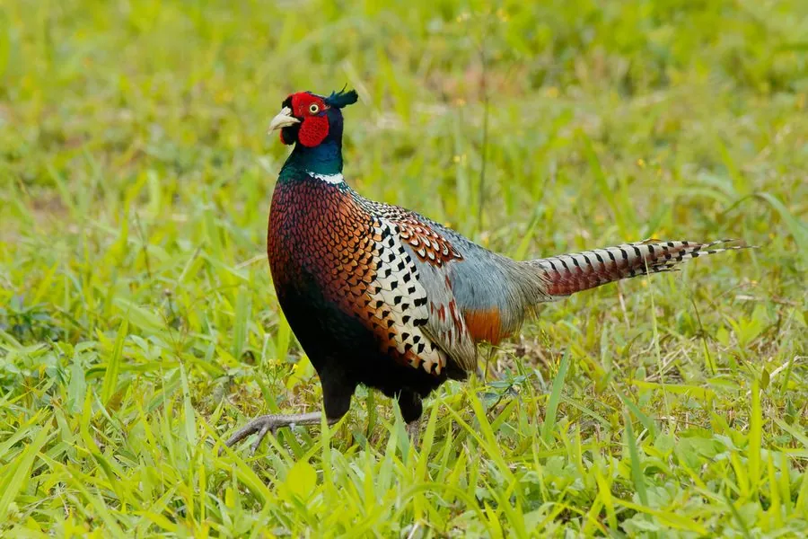

鸟类 · 动物界
环颈雉 Phasianus colchicus

最常见的雉类，雄鸟羽色华丽、尾羽修长，颈部多有白色环带；雌鸟通体棕褐，善隐蔽。广泛栖息于农田与灌丛，被引入世界各地。
- 分类
- 门脊索动物门纲鸟纲目鸡形目科雉科属雉属
- 栖息环境
- 农田、草坡、灌丛、林缘、河滩与湿地边缘，偏好有茂密覆盖物和开阔觅食地的环境。
- 地理分布
- 原产亚洲东部至欧洲东南部；被引入北美、欧洲、澳洲等地，中国广泛分布。
- 保护级别
- IUCN 红色名录列为无危（LC）；中国列入有重要生态、科学、社会价值的陆生野生动物名录（“三有”）。
物种志
环颈雉体长雄鸟七十五至一百厘米、雌鸟五十至六十厘米，体重七百至一千五百克。雄鸟头部暗绿并具红色脸部裸皮，颈部紫绿色，部分亚种具白色颈环；上体铜红至金褐色，羽缘黑色，形成鳞状斑；尾羽长而具黑色横斑。雌鸟通体棕褐，密布黑色和浅色虫蠹斑，尾较短。虹膜黄褐，嘴淡角黄色，脚灰褐色，雄鸟具距。
它栖息于农田、灌丛、草坡、林缘与湿地边缘，适应力强，多在晨昏在地面觅食谷物、种子、嫩芽与昆虫。繁殖期雄鸟占据领域，发出“咯咯—嘎”的响亮鸣叫并振翅展示；巢筑于地面草丛中，每窝产卵八至十五枚。环颈雉原产亚洲，被引入欧洲、北美、澳洲等地作为狩猎鸟和观赏鸟，现为全球分布最广的雉类之一。中国种群数量庞大，被列入“三有”名录。
形态与习性
- 体长雄鸟 75–100 厘米，雌鸟 50–60 厘米
- 体重700–1500 克
- 食性谷物、种子、嫩芽与昆虫
- 繁殖地面草丛营巢，每窝 8–15 枚
- 分布原产亚洲，广泛引入欧美澳
- 保护级别IUCN 无危；“三有”动物
趣味知识
- 雄鸟颈部常有一圈白色羽环，但部分亚种并不明显。
- 已被引入数十个国家，是全球分布最广的雉类之一。
- 善奔跑，受惊时短距离起飞后迅速滑翔入草丛。